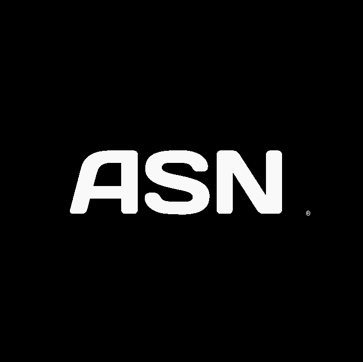
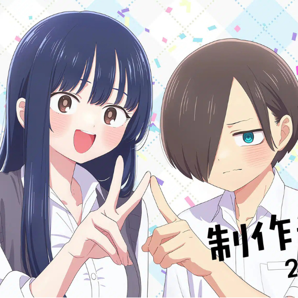

ANIME-SAMA NEWSTout ce qu se passe sur Anime-sama, c'est ici

🔴 Fermeture du lecteur SBNET. Le 1er octobre 2026, une importante perturbation touche Anime-Sama : le lecteur SBNET a cessé de fonctionner, rendant une partie des épisodes indisponibles pour de nombreux utilisateurs.
Cette fermeture suscite de nombreuses réactions au sein de la communauté. Les équipes et utilisateurs cherchent désormais à déterminer l’origine de cette interruption et surtout à savoir si le lecteur sera rétabli ou remplacé par une autre solution.
Nous suivons la situation de près et vous tiendrons informés de toute nouvelle évolution.
THE DANGERS IN MY HEART ANNONCE SA SAISON 3- 5nov.2026

BOCCHI THE ROCK REVIENT AU CINEMA- 2nov.2026

Un film préquel intitulé Hoshi no Ashiato a été annoncé pour 2027.
Une nouvelle occasion de retrouver l'univers musical de Bocchi The rock
KAIJU NO.8 PREPARE UN NOUVEAU FILM- 25oct.2026

VOICI UN LIEN VERS LE CATALOGUE D'ANIME SAMA
CATALOGUE